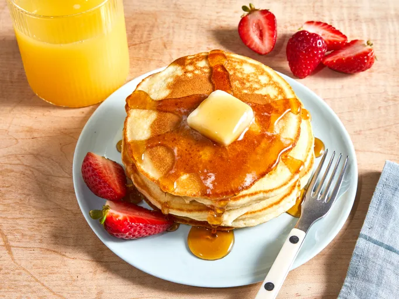

Pancakes Recipe

Description
Fluffy, golden-brown breakfast cakes made from flour, milk, eggs, and baking powder. Whisk dry and wet ingredients separately, combine until just mixed, then cook on a medium griddle until bubbles pop on the surface. Serve with maple syrup or fresh fruit.
Ingredients
- 1 cup all-purpose flour
- 2 tablespoons white sugar
- 2 teaspoons baking powder
- ½ teaspoon salt, or to taste
- 1 cup milk
- 2 tablespoons vegetable oil
- 1 large egg, beaten
Instructions
- Gather the ingredients.
- Combine flour, sugar, baking powder, and salt in a large bowl; make a well in the center. Pour in milk, oil, and egg; mix until smooth.
- Heat a lightly oiled griddle or frying pan over medium-high heat. Pour or scoop about ¼ cup batter per pancake onto the griddle; cook until bubbles form and the edges are dry, 1 to 2 minutes. Flip; cook until browned on the other side. Repeat with remaining batter.
- Serve hot and enjoy!